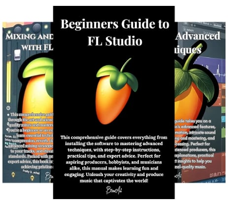

BruA1 Daily Affirmations
Daily inspiration centered on integrity, faith, growth, resilience, and the choices that shape our lives.
 BRUA1MUSIC · BOOKS · EMPIRE
BRUA1MUSIC · BOOKS · EMPIREOriginal sound. Real stories. A lifetime of creating. Explore BruA1 instrumentals, music production, books, and the passions behind the empire.
Independent producer · Guitarist · Author · Creator
Original instrumentals. Creative expression. Years dedicated to the craft. Every sound has a purpose, and every production tells a story.
Discover original BruA1 instrumentals, FL Studio tutorials, mixing and mastering techniques, and real-world music production knowledge. From creating your first track to developing your own sound, there's something here for every producer looking to learn, grow, and perfect their craft.
Explore books that educate, inspire, and challenge the way you think. From FL Studio, music production, mixing, mastering, and guitar to personal growth, spirituality, compassion, and life's deeper lessons. Whether you're developing your creative skills or working toward becoming a better version of yourself, you'll find practical knowledge, honest perspectives, and inspiration to keep growing.
Music production, creative skills, and meaningful reading—published for people who want to keep learning.

Daily inspiration centered on integrity, faith, growth, resilience, and the choices that shape our lives.

Hands-on craftsmanship, remodeling, construction projects, and real-world jobsite experience.
Whether I'm creating an instrumental, writing a book, sharing encouragement, or working with my hands, the mission stays the same: create with purpose, work with integrity, and never stop learning.
BruA1 Empire uses optional Google Analytics to understand website visits and improve content. Analytics loads only if you agree. You can change your choice by clearing this site's browser storage.